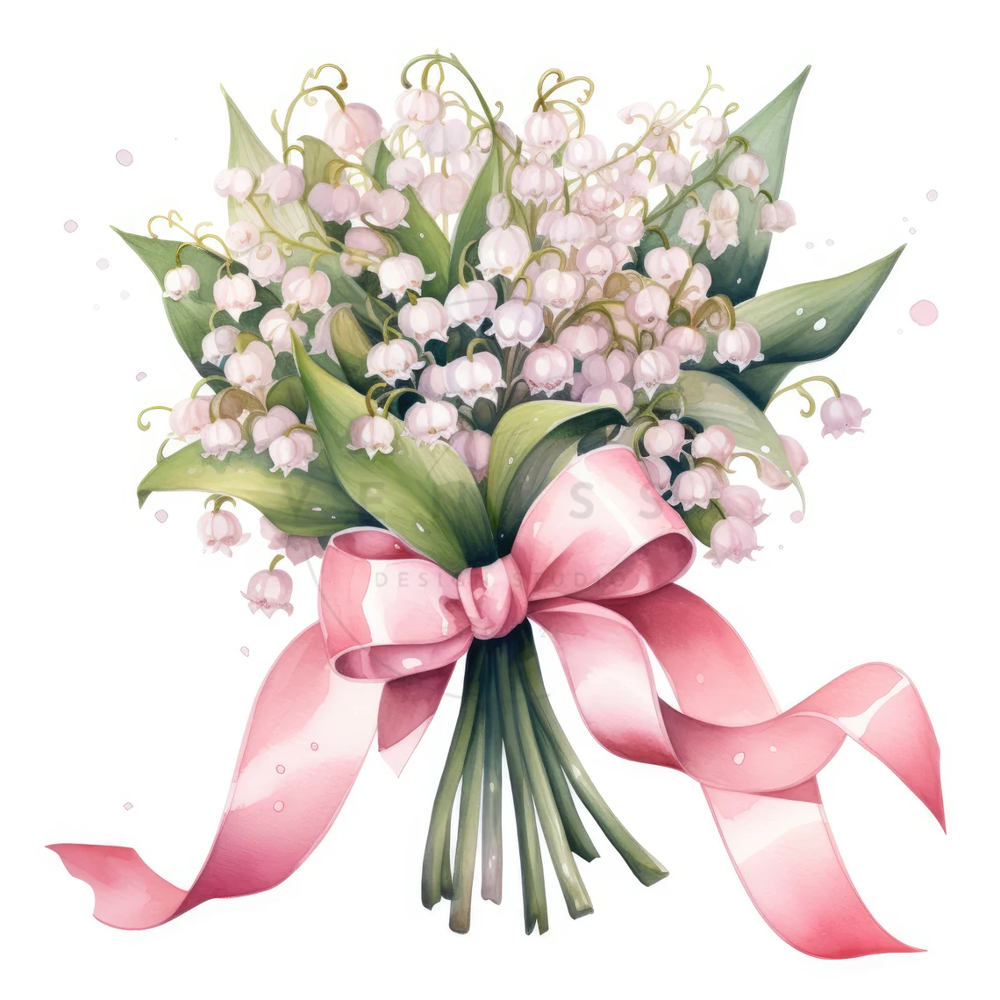

just for you, By
A Little World
Made for You
Three years of us, and I'd still choose you. 💗
Enter our special date to come inside.
A date only we know ✨
Three years of us,
a lifetime to go
I made these little things to remind you how loved you are. 💕
Your Favorite Flower
If I could, I'd fill your world with flowers, By.

A little note for you
Hope you like it Byy, bawi lang ko sunod simo. I Love Youuu!
Our Memories
Three years, countless little moments, and so many more to come. Tap a photo to bring it to the front. 📸
Letter for My Baby
To my By, my love,
Happy anniversary, Byy! 💗
Three years with you, and somehow you still give me excitement. When I think about us, I feel so lucky that life brought me to you. Thank you for being part of my days, for the little moments that turn into my favorite memories, and for making ordinary things feel special just because I get to share them with you.
I hope you always remember how precious you are to me. I may not get every little thing right, and I may not always find the perfect words, but my feelings for you are real. I want to keep learning you, laughing with you, supporting you, and choosing you not only on anniversaries, but on the normal days in between.
These three years mean so much to me, By. I’m very very thankful for every memory we’ve made and excited for all the ones we haven’t made yet. If I could make one wish for us, it would be that we keep growing together, keep being gentle with each other, and keep finding our way back to one another.
Thank you for being you, and for letting me love you. If I had to start our story all over again, I would still hope it leads me to you.
With all my love, today and always,
Your love ♥
Three years with you is a beautiful chapter. I can't wait for the rest of our story. ♡